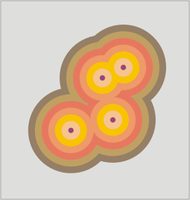

Area di influenza (buffer)
Questo geoprocesso genera "aree di influenza" (buffer) intorno alle geometrie (punti, linee e poligoni) del layer di input, creando un nuovo layer vettoriale di poligoni.
Per ciascun elemento del layer di input, è possibile creare uno o più anelli concentrici equidistanti. Inoltre, se il layer di partenza è di tipo poligonale, l'area di influenza può essere creata esternamente, internamente o in entrambi i modi. Alcuni esempi applicativi delle aree di influenza sono:
aree urbane non servite da scuole nel raggio di 1km;
pozzi non conformi alle norme sul rispetto della distanza minima tra due pozzi consecutivi;
aree golenali dei corsi d'acqua nel monitoraggio del rischio di inondazione.
